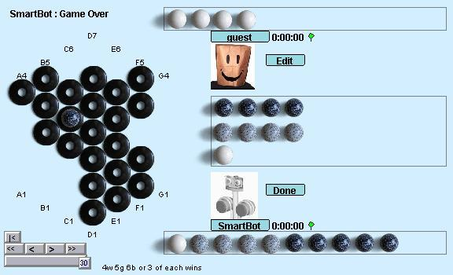

Zèrtz
Zèrtz ist ein
Strategiespiel das auf raffinierte Art anscheinend schwer zu
vereinbarende Regeln wie "es gibt keine
eigenen/gegnerischen Spielsteine" mit Schlagzwang und ausgeklügelten
Gewinnbedingungen vereint. Man gewinnt eine Partie Zèrtz sobald
man 4 weiße, 5 graue, 6 schwarze oder 3 Kugeln jeder Farbe hat. Das am
Anfang sechseckige Spiel-"Brett" besteht aus ausgelegten Ringen. Der am
Zug befindliche Spieler muß soweit möglich Kugeln schlagen, ansonsten
eine Kugel aus dem Vorrat im Spiel platzieren und einen freien
Ring vom Rand entfernen. Womit die Spielregeln auch schon nahezu
vollständig erklärt sind. Die offiziellen
Spielregeln erklären alle Details.
Die grundlegende Strategie bei Zèrtz besteht darin, durch ein oder
mehrere Opfer - weiße Kugeln schlagen zu können. Anfänger verlieren
typischerweise haushoch - aber Übung macht auch hier den Meister.
Fortgeschrittene Zèrtz-Spieler berechnen oft mehr als fünf (teilweise
bis zu elf) Züge im Voraus. Die Komplexität von "Matt-in-N-Zügen"
Schachproblemen ist hier durchaus vergleichbar.
Bots: Sind gut geeignete
Sparring-Partner für Anfänger und Lernende. Für Fortgeschrittene ist
selbst SmartBot kein ernstzunehmender Gegner.
|

|